-
Инструмент "Выделение" [P]
Позволяет выбирать элементы на странице
-
- Контейнер
- Полноэкранный контейнер
- Строка
- Колонка
- Простой блок
Инструмент "Блок" [B]
Позволяет создавать на странице элементы блочного типа
-
- Текстовое поле
- Параграф
- Жирный текст
- Курсив
- Заголовок 1
- Заголовок 2
- Заголовок 3
- Заголовок 4
- Заголовок 5
Инструмент "Текст" [X]
Позволяет создавать текстовые элементы на странице
-

Инструмент "Изображение" [I]
Позволяет загружать изображения на страницу
-
Инструмент "Ссылка" [A]
Позволяет создавать ссылки
-
- Маркированный список
- Нумерованный список
- Элемент списка
Инструмент "Список" [L]
Позволяет создавать списки
-
- Таблица
- Строка
- Заглавная ячейка
- Ячейка
Инструмент "Таблица" [T]
Позволяет создавать таблицы
-
- Форма
- Метка
- Поле
Инструмент "Формы" [F]
Позволяет создавать формы и их элементы
Свойства
Обозреватель